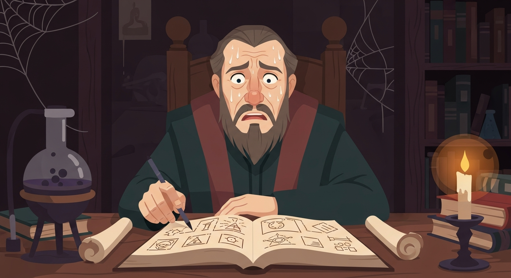
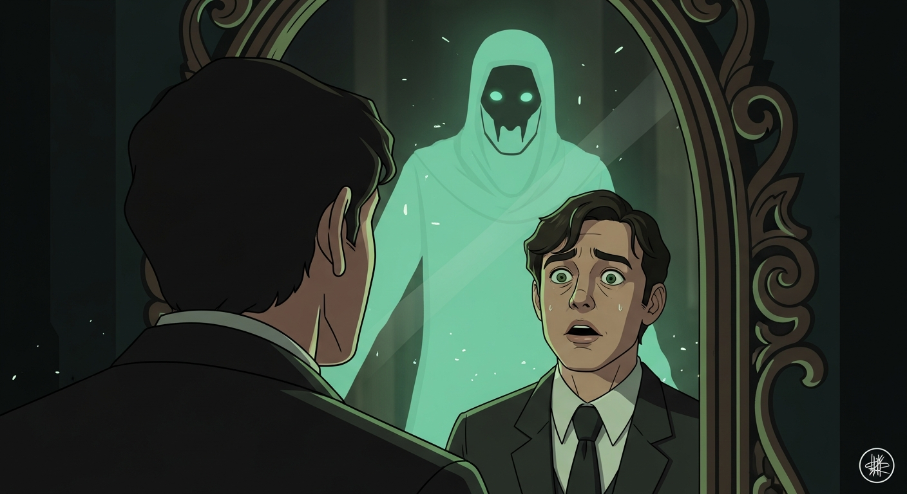

"Invisibilia Dei" hinted at something… a 'Mirror of Souls', tied to Agrippa. My investigation, not judgment, compelled me to seek Alexander F., collector of arcane artifacts. I showed him this faded image—echoes of Clarke's 'Mysterious World'. He knew it. A mirror steeped in rumor, connected to the grimoire from Evil Dead and the Picatrix. Corrupting, he warned. Still, I must find it.

Dee's vault. The mirror… Picatrix whispered of such things—a soul's reflection, twisted. It showed *me*, but wrong. Promises. Temptations. Agrippa warned Dee: unchecked ambition. The mirror shattered. Its energy…gone. The 'Mirror of Souls' shows not just what is, but what *could* be. The path matters.